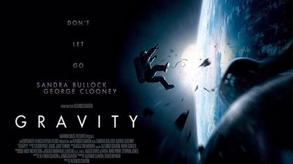
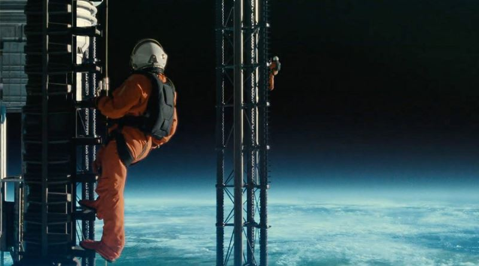
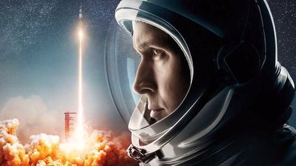
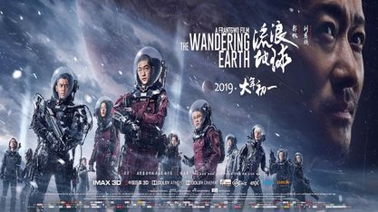

Bazı Uzay Filmleri

Yıldızlararası

Marslı

Çıkış yılı: 2013
Türü: Bilim Kurgu/Gerilim
Saati: 1 saat 31 dakika
Yönetmen: Alfonso Cuarón
Hasılat: $723,2 milyon
Yerçekimi

Çıkış yılı: 2019
Türü: Bilim Kurgu/Gerilim
Saati: 2 saat 4 dakika
Yönetmen: James Gray
Yıldızlara Doğru

Çıkış yılı: 2018
Türü: Dram/Tarih
Saati: 2 saat 21 dakika
Yönetmen: Damien Chazelle
Hasılat: $100.3 milyon
Ay'da İlk İnsan

Çıkış yılı: 2019
Türü: Bilim Kurgu/Macera
Saati: 2 saat 5 dakika
Yönetmen: Frant Gwo
Hasılat: $699 million
The Wandering Earth